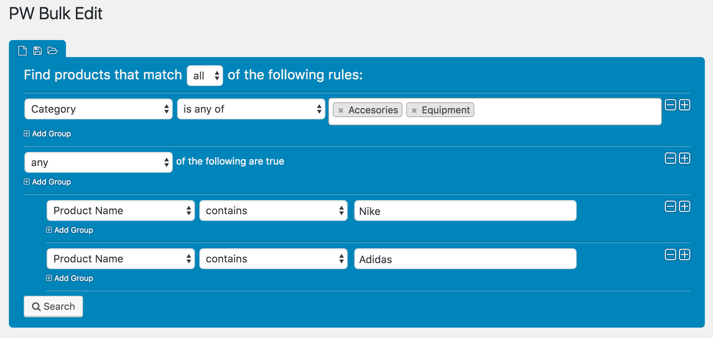
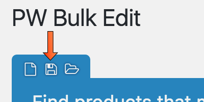
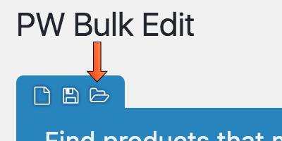
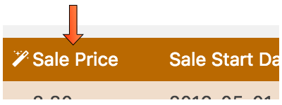
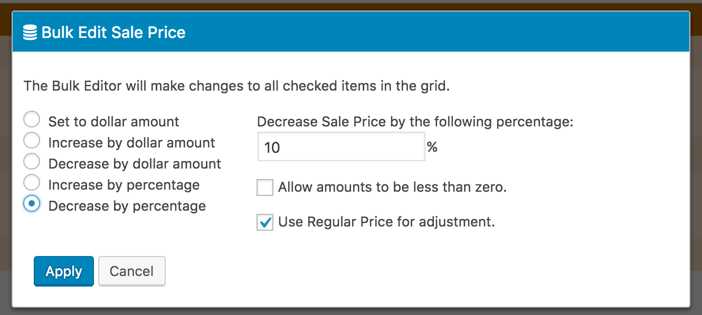
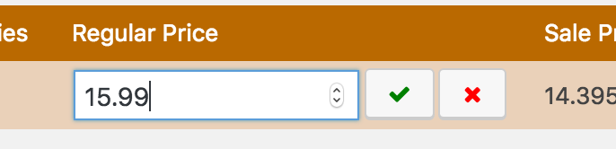
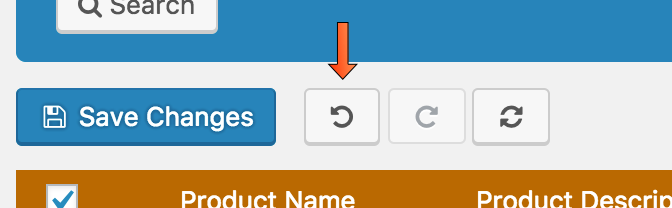
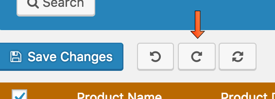
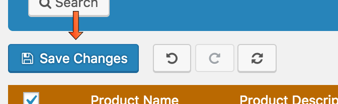

Documentation Updated: 10/03/2016
By: Pimwick, LLC
Email: us@pimwick.com
Thank you for downloading PW WooCommerce Bulk Edit. If you have any questions that are beyond the scope of this help file, please feel free to email us@pimwick.com. Thanks so much!
The PW WooCommerce Bulk Edit plugin allows you to easily change multiple products at once.
The plugin works in three simple steps:
Use the filtering area to limit the products that will be edited during a bulk edit operation.

You can also add groups of filters using the "Add Group" option. This allows you to create advanced filters to find exactly the products you wish to change.
You may wish to save your filter when you have a set of items that are changed periodically. This saves you from having to create the filter each time.
Once you have a filter created click the Save Filter button to save you filter.

To open a saved filter, click the Open Filter button.

Changing many products at once can be done by clicking on the column heading.

Editing options are provided based on the type of field you are changing.

To change a specific field, click on it to bring up the inline editor.

If you make a mistake with a Bulk Edit or with a Manual Edit, click on the Undo button.

You can reapply a change with the redo button.

Once you are satisfied with your changes, click the Save Changes button to apply all product changes to your database.

Thank you so much for purchasing this plugin.
Pimwick, LLC